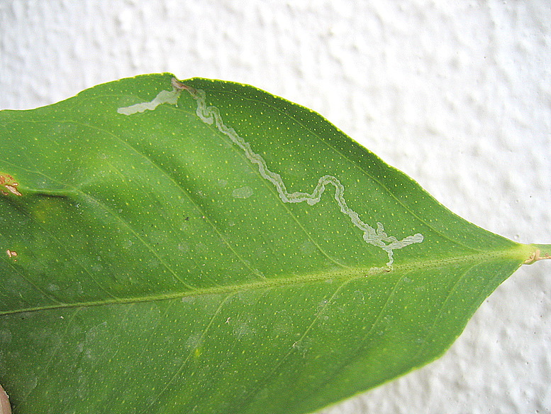
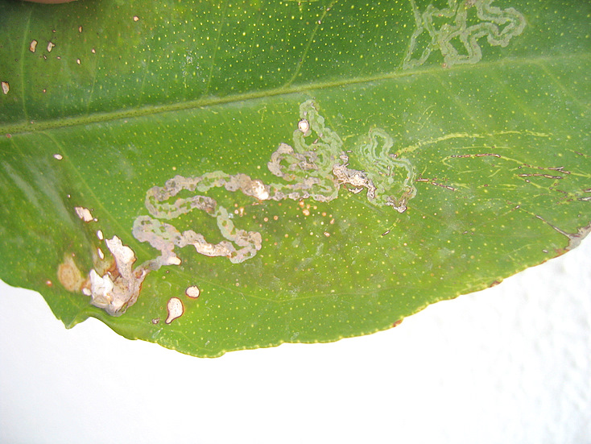

| PHRYGANA | Fauna | Flora | Galles | liste des espèces |
contact -
info - commentaires phrygana1 (at) gmail.com |
| Particularités crétoises | nouveautés | Mines | ressources naturelles |
| Phyllocnistis citrella Stainton 1856 |
| 25 | Fauna | LEPIDOPTERA | GRACILLARIIDAE | Phyllocnistinae | Phyllocnistis Zeller 1848 |
 Phyllocnistis citrella feuille minée de Citrus limon Agia Galini 05 novembre2006 |
| fr: la Mineuse des agrumes en: Citrus Leafminer |
| Envergure: 4 - 5 mm |
| La couleur de fond est blanchâtre irisé, avec quelques lignes transversales brun foncé et un point noir vers l'apex de l'aile antérieure. Les ailes postérieures et le corps sont blancs. |
| La chenille est oligophage: diverses Rutaceae dont Citrus limon (le Citronnier - Lemon Tree). |
| Parties attaquées: les jeunes pousses et les feuilles, rarement les fruits. Les feuilles s'enroulent et dégénèrent. |
| Larve mineuse: Les œufs sont pondus isolément, généralement sur la face inférieure de la feuille. L'éclosion a lieu quelques jours plus tard (5 - 10 jours) et la larve s'enfonce immédiatement dans la feuille pour creuser une galerie superficielle tortueuse, longue de plusieurs centimètres. Le 'frass' (les déchets) est groupé en une mince bande centrale vert foncé. La mine apparaît le plus souvent sur la face inférieure de la feuille, est de couleur verdâtre et a l'air d'une trace d'escargot. Après 1 à 3 semaines (entre 6 à 20 jours), la larve se chrysalide dans la mine dans une loge creusée près de la marge. La larve est vert clair jaunâtre et presque transparente. L'émergence a lieu entre 10 et 25 jours après. Il peut y avoir jusqu'à 8 (- 10) générations annuelles. |
| Espèce plurivoltine avec des périodes de vol en mars avril mai juin juillet août septembre octobre novembre. |
| Statut en Crète: indigène -- native |
| Biotopes en Crète: vergers, jardins. |
| Distribution: Europe méridionale, Moyen-Orient, Iran, devenant cosmopolite (partout où il y a des cultures d'agrumes). |
| Origine: Asie du Sud-est |
| Note: Phyllocnistis citrella peut être un ravageur important dans les plantations d'Agrumes. Une seule mine dans une feuille suffit à faire dépérir la feuille. |
|
 Phyllocnistis citrella feuille minée de Citrus limon Agia Galini 05 novembre2006 |
| 18 février 2012 |
| © paul fontaine -- © Phrygana.eu 2007 -- 2013 |